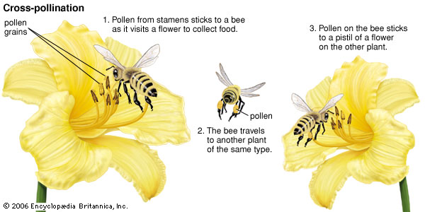

What Do They Do to Help The Environment?
Bees travel from plant to plant carrying pollen on their bodies in a vital interaction that allows the transfer of genetic material critical to the reproductive system of most flowering plants – the very plants that Bring us countless fruits, vegetables, and nuts. ½ of the world’s oils, fibers and raw materials; Prevent soil erosion. Increase carbon sequestration The honey bees are experiencing a run of bad luck. Between pesticides, fungus, mite infestations, natural disasters, and global warming they just can't catch a break. Did you know that Honey bees are the most important pollinators for flowers, fruits and vegetables? This means that they help other plants grow, and without them many of the food sources you enjoy each day would be gone. According to the NRDC In some regions, up to 90% of bees have disappeared!
